Repair Procedures
Replacement
1. Loosen the wheel nuts slightly.
Raise the vehicle, and make sure it is securely supported.
2. Remove the front wheel and tire (A) from front hub.
Tightening torque:
88.2 - 107.8 N.m (9.0 - 11.0 kgf.m, 65.0 - 79.5 lb-ft)

CAUTION:
Be careful not to damage to the hub bolts when removing the front wheel and tire (A).
3. Remove the brake caliper mounting bolts, and then place the brake caliper assembly (A) with wire.
Tightening torque:
78.4 - 98.0 N.m (8.0 - 10.0 kgf.m, 57.8 - 72.3 lb-ft)

4. Loosen the bolt and the remove the wheel speed sensor (A).

5. Loosen the screw and then remove the front disc (A).

6. Loosen the driveshaft nut (A).
Tightening torque:
196.1 - 274.5 N.m (20.0 - 28.0 kgf.m, 144.6 - 202.5 lb-ft)

CAUTION:
- The driveshaft lock nut should be replaced with new ones.
- After installation driveshaft lock nut, stake the lock nut using a chisel and hammer as shown in the illustration below.
- After unfolding the lock nut of caulking slot, loosen the lock nut.

7. Remove the tie rod end ball joint (A) from the knuckle.
(1) Remove the split pin (B).
(2) Remove the castle nut (C).
Tightening torque:
23.5 - 33.3 N.m (2.4 - 3.4 kgf.m, 17.4 - 24.5 lb-ft)

8. Remove the lower arm (A) from the knuckle.
Tightening torque:
78.4 - 88.2 N.m (8.0 - 9.0 kgf.m, 57.8 - 65.0 lb-ft)

9. Disconnect the driveshaft (A) from the front hub assembly.

10. Insert a pry bar between the transaxle case and joint case, and separate the driveshaft (A) from the transaxle case.
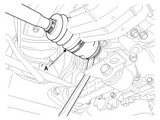
11. Install in the reverse order of removal.
CAUTION:
- Use a pry bar (A) being careful not to damage the transaxle and joint.
- Do not insert the pry bar (A) too deep, as this may cause damage to the oil seal.
- Do not pull the driveshaft by excessive force it may cause components inside the joint kit to dislodge resulting in a torn boot or a damaged bearing.
- Plug the hole of the transaxle case with the oil seal cap to prevent contamination.
- Support the driveshaft properly.
- Replace the retainer ring whenever the driveshaft is removed from the transaxle case.
12. Check the alignment.
Inspection
1. Check the driveshaft boots for damage and deterioration.
2. Check the driveshaft spline for wear or damage.
3. Check that there is no water or foreign material in the joint.
4. Check the spider assembly for roller rotation, wear or corrosion.
5. Check the groove inside the joint case for wear or corrosion.
6. Check the dynamic damper for damage or cracks.
Disassembly
CAUTION:
- Do not disassemble the BJ assembly.
- Special grease must be applied to the driveshaft joint. Do not substitute with another type of grease.
- The boot band should be replaced with a new one.
1. Remove the circlip (B) from the driveshaft spline (A).
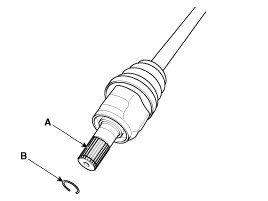
2. Remove both boot bands from the transaxle side joint(TJ) case.
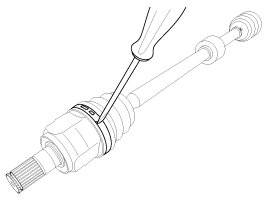
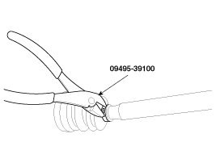
3. Pull out the boot from transaxle side joint case (B).
4. While dividing joint(TJ) boot (A) of the transaxle side, wipe the grease in TJ case (B) and collect them respectively.
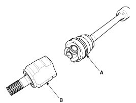
CAUTION:
Make alignment marks on spider roller assembly (A), joint case (B), and shaft spline (C) to aid reassembly.
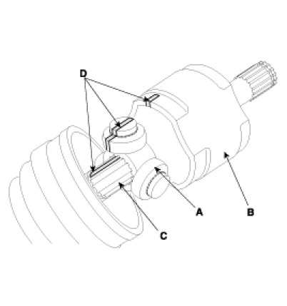
5. Remove the snap ring (A) and spider roller assembly (B) from the shaft.
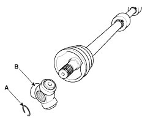
6. Remove the spider assembly (B) from the driveshaft (A).
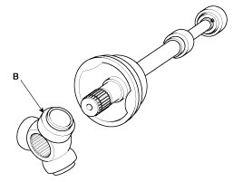
7. Clean the spider assembly.
8. Remove the boot (A) of the transaxle side joint(TJ).
CAUTION:
For reusing the boot (A), wrap tape (B) around the driveshaft splines (C) to protect the boot (A).
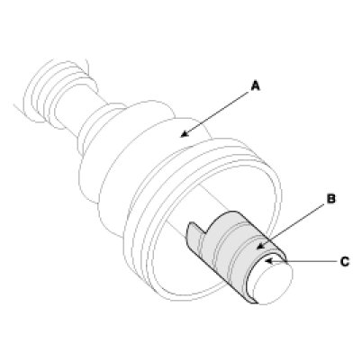
9. Using a plier or flat-tipped (-) screwdriver, remove the both side of clamp (B) of the dynamic damper (A).
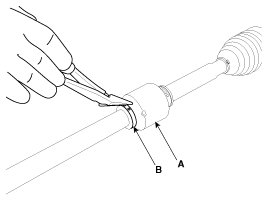
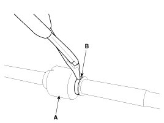
10. Fix the driveshaft (A) with a vice (B) as illustrated.
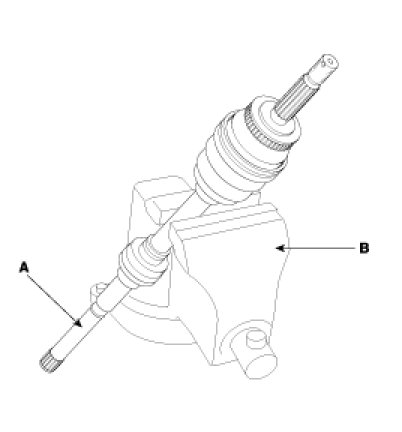
11. Apply soap powder on the shaft to prevent being damaged between the shaft spline and the dynamic damper when the dynamic damper is removed.
12. Separate the dynamic damper (A) from the shaft (B) carefully.
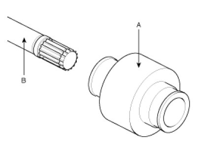
Reassembly
1. Wrap tape around the driveshaft spline(TJ) to prevent damage to the boots.
2. Apply grease to the joint boot on the side of the wheel and install the boot.
3. Install the clamp.
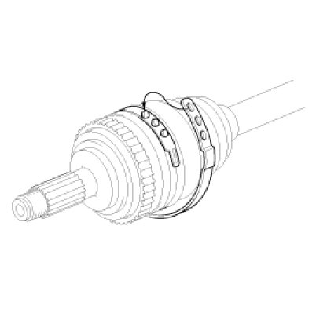
4. Assemble the transaxle side joint boot and bands.
5. Using the alignment marks (D) made during disassembly as a guide, install the spider assembly (A) and snap ring (B) on the driveshaft splines (C).
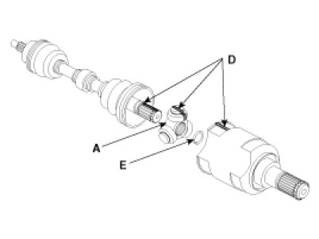
6. Add specified grease to the joint boot as much as it was wiped away at inspection.
7. Install the both boot band.